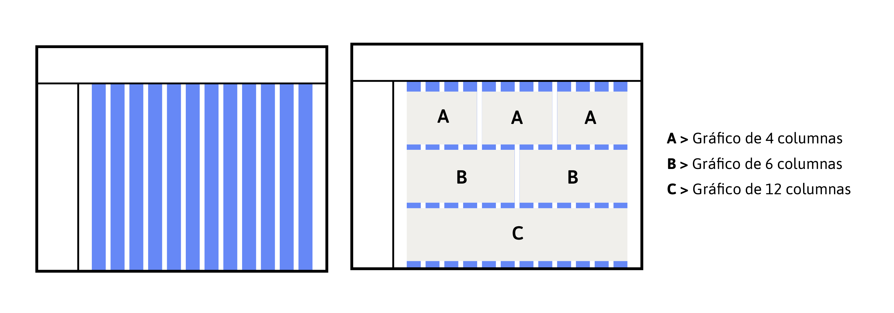
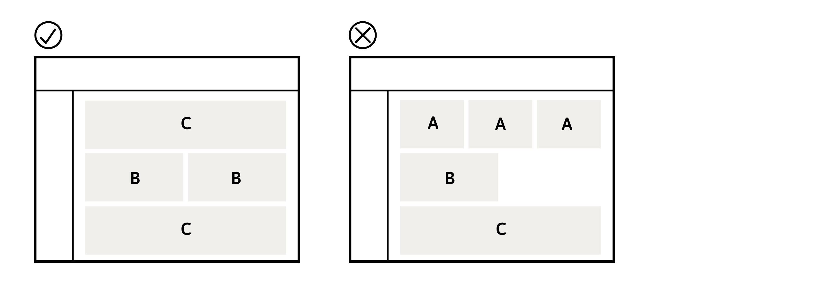
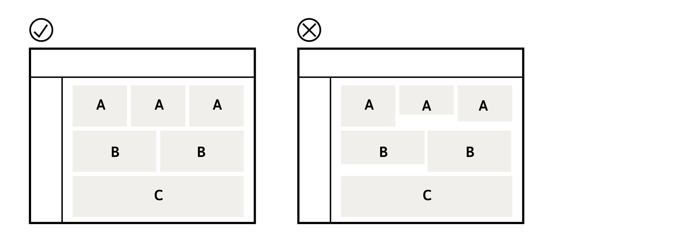

En esta etapa lo más importante es ordenar los gráficos según jerarquía de información y la disponibilidad de espacio. Los gráficos se distribuyen en base a una grilla de 12 columnas, donde 1 gráfico puede ocupar 4, 6 o 12 de las columnas, como se muestra en el diagrama siguiente. Los gráficos que son más importantes para el cliente deben ubicarse en la parte superior de la vista.

Otras consideraciones importantes a tener en cuenta para la composición visual del dashboard son las siguientes:
1. Al organizar los gráficos en la grilla, se debe intentar no dejar espacios en blanco.

2. Los gráficos que se encuentran en una misma fila deben tener el mismo alto.

3. Los gráficos que tienen información complementaria, comparativa o relacionable deben ubicarse en espacios continuos
4. Al distribuir los gráficos evita dejar espacios blancos (espacios sin gráficos) entre los gráficos. En caso de no poder evitarlo, se recomienda dejar el espacio en blanco para el final de la vista.
ETAPA 4
BIBLIOTECA DE GRÁFICOS